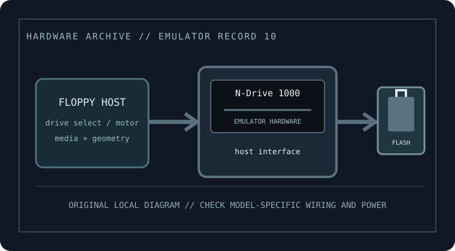

[ FLOPPY EMULATORS // IDENTIFIED HARDWARE ]
Nalbantov N-Drive 1000 USB Floppy Emulator (Yamaha QS300 configuration)
A model-specific record for physical floppy-drive emulation hardware. It distinguishes host-side floppy signaling from USB/flash image storage; model suffix, harness, and firmware matter for fit.

MODEL IDENTIFICATION: N-Drive 1000 — Nalbantov N-Drive 1000 USB Floppy Emulator (Yamaha QS300 configuration). Compatibility depends on the exact host, connector, signals, firmware, and image preparation; a matching nominal capacity alone is not enough.
Recorded specifications
| Cataloged part / SKU | Nalbantov N-Drive 1000 USB Floppy Emulator (Yamaha QS300 configuration) |
|---|---|
| Manufacturer | Nalbantov |
| Product family | Host-configured USB flash floppy replacement for Yamaha QS300 |
| Drive bay / physical fit | Drive-replacement module; actual bracket, depth, and panel arrangement depend on the QS300 kit supplied. |
| Host interface | Host-facing floppy interface and harness are supplied/configured for the Yamaha QS300; use the kit wiring and Yamaha service information. Do not assume a universal PC 34-pin mapping. |
| Supported floppy formats | The QS300 configuration must preserve the Yamaha-supported floppy capacity, geometry, and file conventions. Do not assume arbitrary PC IMG/HFE/ADF support: use the N-Drive/Yamaha-specific manual and image preparation instructions. |
| Image / storage handling | USB flash drive; manufacturer sells a ready-to-use stick option. Follow N-Drive image-conversion and folder/selection procedure; avoid reformatting an initialized stick. |
| Disk-select / drive wiring | Drive-select and cable/pin mapping are part of the host-matched configuration. Confirm select line, motor/disk-change, connector orientation, and any jumpers using the QS300 installation document. |
| Power | Powered as specified by the QS300 host-matched installation kit; verify the emulator label and installation manual for input voltage/polarity rather than assuming a generic supply. |
| Host compatibility | Manufacturer lists this N-Drive 1000 product specifically for Yamaha QS300/QS-300; this exact configuration is not evidence of compatibility with other Yamaha models. |
Compatibility, installation & caveats
Before installation, compare the emulator’s exact revision and harness against the host service documentation. Confirm connector keying and pin one, power voltage and polarity, drive-select state, motor/disk-change signals, expected density, and image geometry. Preserve a read-only copy of original disks and configuration files before experimenting.
- N-Drive options vary by host and physical connector; retain the original QS300 drive/media until image transfer, boot, save, and reload have all been tested.
- Firmware changes can alter accepted image types, read/write behavior, and host timing. Record the installed firmware and test only with copies before relying on it.
- These devices emulate sector-level floppy behavior, not a magnetic medium. For preservation of nonstandard tracks, copy protection, or forensic evidence, use a flux-capable capture workflow and retain its raw captures.
Sources & further reading
- Nalbantov — N-Drive 1000 product listingManufacturer listing identifying the specific model and its intended class/application.
- Nalbantov — N-Drive musical-equipment setup and compatibility guidanceManufacturer setup and model guidance; use it to confirm exact connector, media preparation, wiring, and power before installation.
Manufacturer statements are not a guarantee for every machine revision. Check the actual device label, harness, host service manual, and firmware before connecting.